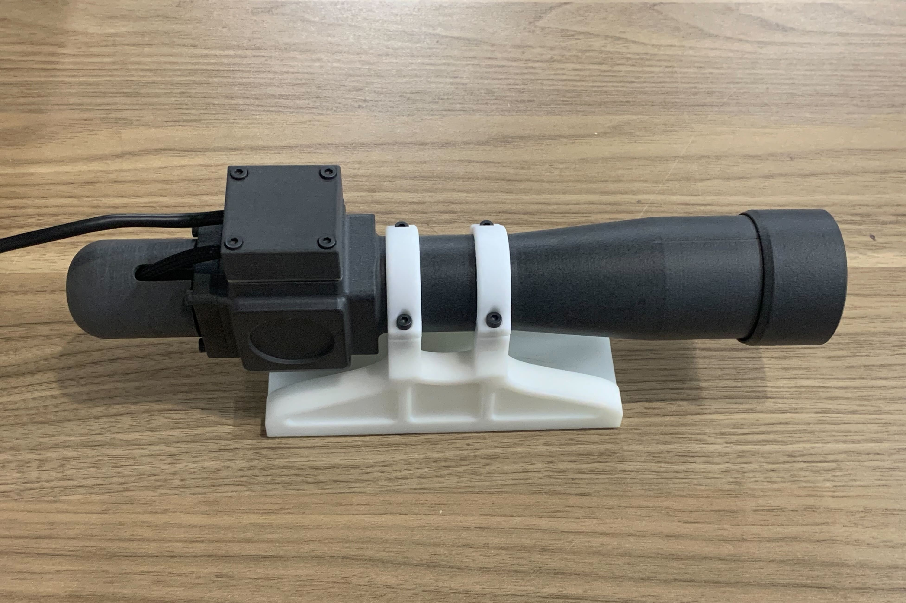
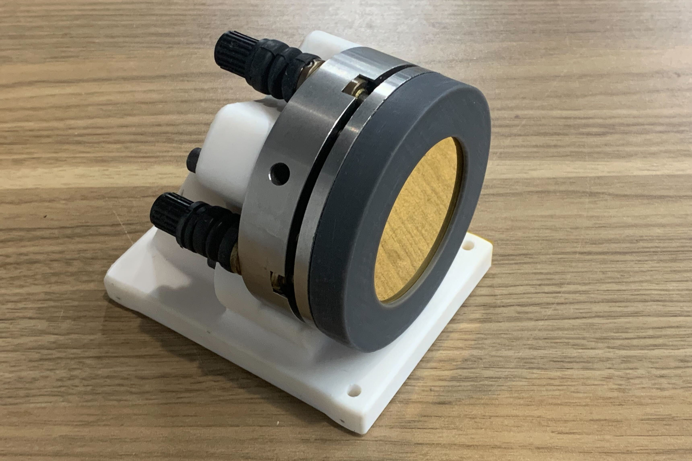

Autocollimator
Fall 2022
High-precision Non-contact Relative Angle Measuring Instrument

In the fall of 2022 I became interested in autocollimators. Both because I realized they can be a powerful measurement tool under certain circumstances, and because they are very simple devices. They have a high ratio of instrument precision to component precision, and don't necessarily require extreme care in fabrication to obtain good results.
Because of this simplicity of design, I decided to try entirely 3D-printing my autocollimator, as an exercise in simpler manufacturing techniques than the machining that I'm more used to and more comfortable with. I started with all components being 3D printed on Formlabs printers in a highly glass-filled resin, to maximize the stiffness of the structure, as the primary loss of precision here will be flex of the housing and thermal expansion of the base. After building the first prototype, I switched to using SLS nylon parts, because the Rigid 10k resin was surprisingly transluscent, which limited the contrast ratio I was getting in the resulting image. The SLS-nylon is less stiff, but was fully opaque, pretty non-reflective, and let me print larger single parts.
In addition to the autocollimator, I also made a mirror with a two-axis adjustable tilt mount that I had laying around, and a printed base (printed in the glass-filled resin). On the bottom of the mirror base, I potted three steel washers into recesses on the bottom of the printed mount, and then lapped those to form a consistent flat surface for the bottom of the mount. I did the same to the mount for the autocollimator itself.

The autocollimator mirror and mount. The mirror appears to be an optical flat half-silvered with gold.
Autocollimators essentially function by projecting a collimated beam of a light source, reflecting it back into the device, and then imaging that reflected beam. Analog autocollimators then essentially use a magnifying eyepiece to view that image and measure it's deflection against a fixed scale. In my case, I instead imaged it onto a low-cost camera sensor. Despite not having an impressive resolution, the tiny size of the sensor makes it an impressively high accuracy sensor for the deflection of the image. The other components that are relevant to the precision of the final instrument are the flatness of the beamsplitter, the flatness of the reflecting mirror, and the trueness of form of the objective lens (the only lens in the system, a low-cost cemented achromatic doublet).
An interesting aspect of the design process was how to interpret the image from the camera sensor. At first, I started with my light source being a back-lit crosshair, just like traditional analog autocollimators. I then wrote a complicated python script that used several rounds of convolution to extract the center point of the crosshairs. This was very difficult, though and a bad solution. It was computationally intensive, which lowered the effective framerate, and was not that accurate because it was highly sensitive to noise. I realized that the crosshair was unneccessary, and made life much harder. When I made the second protoype, I eliminated the crosshair, and instead used a diffuse light source shining through small aperture. This was deliberately left defocused, so the image on the camera sensor was a blurry blob. Inscruitible to humans, but far simpler for a computer to parse, because I can simply take a center-of-mass of that image to very reliably get sub-pixel resolution.
I eventually got a chance to test the autocollimator, helping a friend inspect their large 4' x 10' optical table for flatness. I still have improvements to make, though, especially improving the adjustment of the objective that sets how collimated the beam of light is. I am planning to build a larger autocollimator with a big achromatic lens of a much longer focal length, which will be much more sensitive. For that higher-sensitivity autocollimator, however, I will go back to machining it from steel, so I don't need to worry about thermal expansion and deflection of the components as much.